歡迎來到 PHP雲端ERP 的世界
PHP 是開發 雲端ERP 應用程式的工具組。提供簡易的介面和邏輯結構來使用豐富的函式庫，其目的是讓你加 快開發速度。使用 PHP 只需要寫少少的程式，創造力可專注在專案開發。
雲端ERP 使用手冊目錄
參、日常異動處理
1、核價單建立作業
■程式代號：PURI03
■程式名稱：核價單建立作業
■作業目的：供應廠商針對提供的商品報價資料建檔，透過本作業將可記錄供應廠商所有供應價格的變動過程，並可列印核價單憑證作為內部審查或核准的依據。
■輸入畫面：
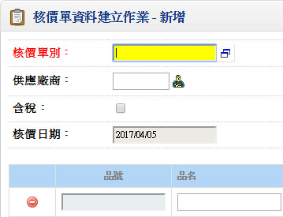 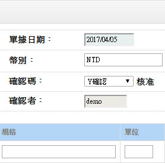- ■重要欄位說明：
- 功能紐：分量計價維護（單身明細）
- 功能紐：分量計價維護（單身明細） 若單身分量計價鈕啟動『ˇ』，表示本品號有分量計價的需求，並需作資料的輸入，則可開窗作資料輸入關於輸入的欄位說明請詳「品號廠商資料建立作業」說明
- 計價單位
- 不可空白，預設「品號資料建立作業」的『庫存單位』
- 在修改狀態若單位修改時，依換算率換算『單價』欄位值
- 生效日
- 不可空白，指本核價單單價的生效日期，若核價單為『更新核價』，本欄位資料將更新至「品號廠商資料」之『生效日期』
- 失效日
- 可空白，指本核價單單價的失效日期，若核價單為『更新核價』，本欄位資料將更新至「品號廠商資料」之『失效日期』
- 失效日不可≦生效日
- 廠商品號
- 註記欄位
- 分量計價
- 若該品號輸入需作分量計價，請選擇，則可於序號前的功能鈕進行分量計價資料的輸入。關於分量計價輸入限制請詳後之作業重點說明
- 單價
- 單價的預設順序如下：
- 品號廠商資料
- 0
- ■作業重點：
- 單據更新時更新以下檔案：
- 核價單單頭、單身檔
- 品號廠商資料單頭、單身檔（若核價單單據設定為『更新核價』時）
- 分量計價更新品號廠商資料之核價單，應與一般數量的核價單分開打單
- 分量計價的核價單（『更新核價』）
*.核價單單身的『數量』不輸入，『單價』將更新「品號廠商資料」之單頭『單價』
*.核價單身開窗的分量計價將更新「品號廠商資料」之單身分量計價資料 - 一般數量的核價單（無分量計價管理需求或一般的更新核價）
*.核價單單身的『數量』及『單價』輸入
2.採購單建立作業
■程式代號：PURI07
■程式名稱：採購資料建立作業
■作業目的：採購品號的採購單輸入。
■輸入畫面：
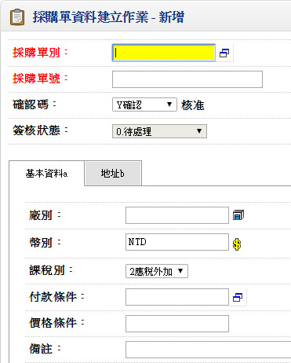 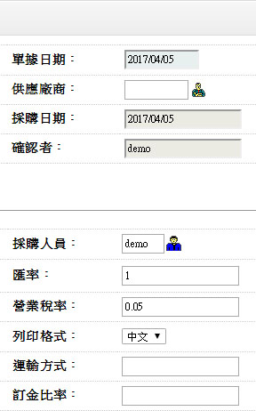▼
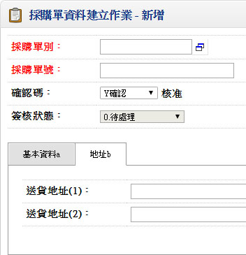 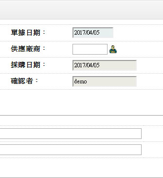- ■重要欄位說明：
- 匯率
- 顯示『銀行的賣出匯率』，可修改
- 單位
- 必須存在「品號資料建立作業」之『換算單位』
- 採購單價
- 取價順序：
<1>.品號廠商資料。
<2>.最近進價。 （品號資料檔）
<3>.標準進價。 （品號資料檔） - 輸入時若空白，而金額有值，本欄位將由金額倒推，推算邏輯如下：
單價＝金額／加總後採購數量 - 採購金額
- 採購金額＝採購數量×採購單價
- 可空白，預交日≧採購日期，輸入時預設上一筆資料
- 已交數量
- 顯示欄位，由進貨單及退貨單的核准所更新。若資料發生異常時，請執行維護作業中的「採購單已交量重計作業」
- 結案碼
- 顯示欄位，有三種狀態：
- 已交數量≧訂單數量時，顯示【Y:自動結案】
- 已交數量＜訂單數量時，顯示【N:未結案】
- 透過指定結案作業更新時，可顯示【y:指定結案】
- 製造商
- 指料件承認之合格廠商
3.進貨單建立作業
■程式代號：PURI09
■程式名稱：進貨單建立作業
■作業目的：採購進貨記錄登錄。
- 註記：
- 採購單建立作業。 .若進貨單之單據性質設定為『核對採單』，則進貨時必須核對已存在採購單號，若不核對採單，則允許無採單來源的進貨單輸入作業
- 帳款系統（單據性質建立作業==>應付憑單） .若進貨單之單據性質設定為『直接結帳』，則表示進貨單核准時，同時產生廠商之應付憑單（應付帳款）。所以必須先於單據性質中設定應付憑單單別
■輸入畫面：
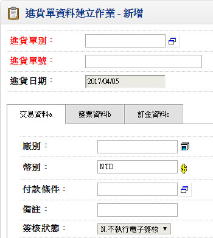 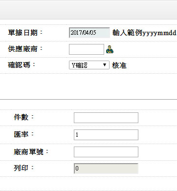▼
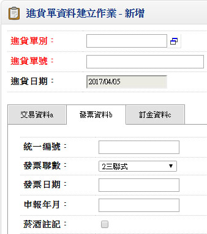
▼
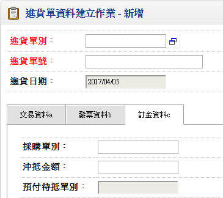 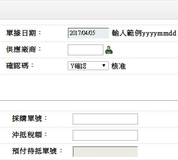- ■重要欄位說明：
- 廠商單號
- 可空白，註記欄位，可記錄廠商之進貨單據號碼
- 發票資料
- 「營業稅媒體申報系統」之銷項資料來源欄位
- 進貨數量
- 若有採購單來源，則預設該採購單未交數量（採購數量－已交數量）
- 輸入時判斷「品號資料建立作業」是否做「超收」的管制，並依其所設定超收率，換算此欄位允許收料數量
- 批號
- 「品號資料建立作業」中設定為『批號管理』，則此欄位不可空白
- 有效日期、複檢日期
- 若該品號為批號管理，本欄位依進貨日期與「品號資料建立作業」之『有效天數』『複檢天數』推算，可修改
- 採購單別、單號
- 「單據性質檔」設定核對採購時，本欄位不得空白，且輸入的採購單必須已確認
- 資料輸入時，若之前欄位先輸入，再輸入本欄位，系統將檢查所有先前欄位資料是否與採購單資料相符，資料不一致時將顯示所有提示訊息。如：a.廠商不符。b.品號不符。c.已結案警告
- 輸入採購單時，若該預交日期早於進貨日期，提示『提早交貨』警訊
- 驗收日期
- 若進貨單別屬於直接確認且該品號為免檢件則『驗收日期』預設進貨日期
- 若透過【驗收】進入本作業時，『驗收日期』預設系統日期
- 驗收日期不可小於進貨日
- 驗收數量、驗退數量
- 驗收數量不可大於進貨數量
- 輸入驗收數量時，將『驗收數量』及『進貨數量』的差額預設於『驗退數量』欄位
- 計價數量
- 預設『驗收數量』，不可大於驗收數量
- 單位進價
- 取價順序為：
- 採購單單價
- 品號廠商資料
- 最近進價（品號基本資料建立）
- 標準進價（品號基本資料建立）
- 扣款金額
- 預設扣款金額（本國幣別）＝原幣扣款金額×匯率
- 進貨費用－本國幣別
- 本國幣別，資料輸入將納入存貨金額累算
- 存貨金額＝（進貨金額－扣款金額）×幣別匯率＋進貨費用
- 合計
- 顯示欄位，不可修改
- （進貨金額－扣款金額）×匯率＋進貨費用
- 暫不付款
- 預設非暫不付款。本欄位可由使用者自行調整或者透過【指定暫不付款】功能來更新
- 進貨單確認時，表示應該可以產生對應的應付憑單（不論是批次或直接結帳），但是這張進貨單如果要由人工來控制結帳與否，可將本欄位調整為『ˇ』，表示本進貨單，暫時不可產生應付帳款
- 當於適當時間時，可將欄位改為『 』，表示這張進貨單在下一次結帳時，會納入應付帳款
- 逾期碼
- 本欄位為廠商品質評核的基礎資料
- 當輸入採購單時，若採購單之預交日＜進貨日，則顯示『ˇ』
- 可修改，對於逾期非廠商因素者，可將調整為『 』
- 不良碼
- 輸入時當『驗收數量＜進貨數量』時則預設『Y』
- 可修改，對於雖全數驗收的進貨（特採），可由使用者調整為『ˇ』
- 驗退碼
- 顯示欄位
- 當進貨數量＞驗退數量時，顯示為『N』。表示此筆進貨單於驗收過程發生退貨情形，當您以此筆進貨單執行「驗退件退回」作業時，本欄位狀態會變成為『ˇ』
- 結帳碼
- 顯示欄位，顯示該銷貨單是否已經產生對應的「應付憑單」
- 計有兩種狀態，1.未結帳 2.已結帳
- 應付憑單別
- 顯示欄位，若該進貨單單據為『已結帳』時，此將顯示該進貨單對應的應付憑單單別
- 待驗量
- 顯示欄位，表該採購單目前對應還未確認的「進貨單」數量合計
- 製造商
- 顯示欄位,不可修改
- 承認型號
- 顯示欄位,不可修改
4.退貨單建立作業
■程式代號：PURI11
■程式名稱：退貨單建立作業
■作業目的：採購進貨入庫的商品，在儲存期間或製造過程發覺有原材質不良之狀況，經與供應廠協商經同意後，將原進貨商品退回供應廠商的作業。 註：帳款系統（單據性質建立作業==>應付憑單） 若進貨單之單據性質設定為『直接結帳』，則表示進貨單核准時，同時產生客戶之應付憑單（應付帳款）。所以必須先於單據性質中設定應付憑單單別。
■輸入畫面：
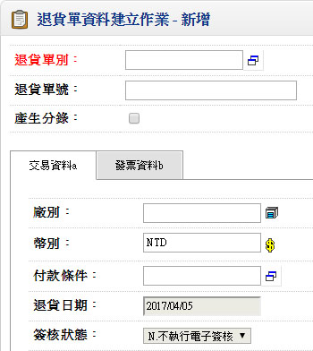 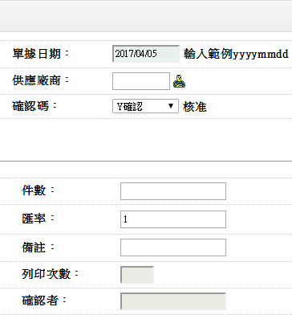- ■重要欄位說明：
- 單價
- 取價順序為：
- 進貨單單價
- 採購單單價
- 品號廠商資料
- 最近進價（品號基本資料建立）
- 標準進價（品號基本資料建立）
- 數量
- 當該庫別進行『庫存數量不足不允許出庫』管制時，退貨的數量不可大於驗收數量（輸入進貨單）或大於已交數量（輸入採購單）或者大於庫存數量
- 批號
- 「品號資料建立作業」中設定為『批號管理』，則此欄位不可空白
- 進貨單別
- 可空白
- 輸入進貨單別時檢查退貨日不可早於驗收日期
- 原採購單別
- 若退貨單別於「單據性質檔」設為『核對採購』，表示本欄位不可空白，輸入的採購單別必須要為已存在而且已確認
- 資料輸入時，若之前欄位先輸入，再輸入本欄位，系統將檢查所有先前欄位資料是否與採購單資料相符，資料不一致時將顯示所有提示訊息
- 結帳碼
- 顯示欄位，顯示該銷貨單是否已經產生對應的「應付憑單」（帳款管理系統）
- 應付憑單別
- 顯示欄位，若該進貨單單據之『結帳碼』為【已結帳】時，此將顯示該進貨單對應的應付憑單單別